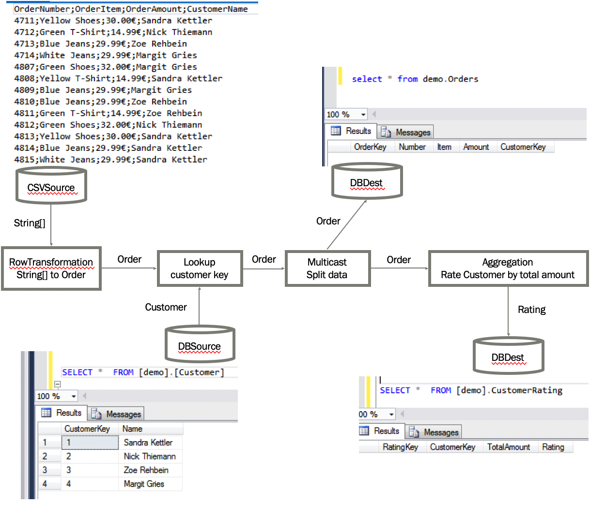

Example: Rating orders
Purpose
This example demonstrates how the different data flow components can be used together, simulating a real-life scenario. In this scenario, we will to read some orders from a csv file, lookup the customer key by using the customer name, write the orders into an orders table and also create a customer rating based on the total amount of purchases.
Schematic overview

Preqrequisites
In order to recreate this demo, you need a database server. This example will run on any supported database - though every database comes with some database specific particularities. The following code was succesfully tested with Sql Server.
If you are using docker, you can use the following command to create a docker container for Sql Server:
docker run -e "ACCEPT_EULA=Y" -e "SA_PASSWORD=YourStrong@Passw0rd" -p 1433:1433 --name localmssql -d mcr.microsoft.com/mssql/server
You may need to create a login first, and call docker login before you can execute this command. The container can be started with docker start localmssql.
This will create a Sql Server database listening on port 1433 for incoming connections. The sysadmin login has the username sa with the password YourStrong@Passw0rd.
You need to create a database called "demo" prior to following this example.
The connection string to connect to this database will look similar like this:
Data Source=.;Initial Catalog=demo;Integrated Security=false;User=sa;password=YourStrong@Passw0rd;
You probably need to adjust the adress to your needs (e.g. replace "." with "10.211.55.2" to access the database on a different machine).
Preparation
We need to create the destination table orders and customer_rating as empty table. Also
we want a customer table that hold a customer key for our customer names.
We could do this manually, or we can use the following ControlFlow Tasks to create these tables:
ControlFlow.DefaultDbConnection = new SqlConnectionManager("Data Source=.;Initial Catalog=demo;Integrated Security=false;User=sa;password=YourStrong@Passw0rd");
TableDefinition OrderDataTableDef = new TableDefinition("orders",
new List<TableColumn>() {
new TableColumn("Key", "int",allowNulls: false, isPrimaryKey:true, isIdentity:true),
new TableColumn("Number","nvarchar(100)", allowNulls: false),
new TableColumn("Item","nvarchar(200)", allowNulls: false),
new TableColumn("Amount","money", allowNulls: false),
new TableColumn("CustomerKey","int", allowNulls: false)
});
TableDefinition CustomerTableDef = new TableDefinition("customer",
new List<TableColumn>() {
new TableColumn("Key", "int",allowNulls: false, isPrimaryKey:true, isIdentity:true),
new TableColumn("Name","nvarchar(200)", allowNulls: false),
});
TableDefinition CustomerRatingTableDef = new TableDefinition("customer_rating",
new List<TableColumn>() {
new TableColumn("Key", "int",allowNulls: false, isPrimaryKey:true, isIdentity:true),
new TableColumn("CustomerKey", "int",allowNulls: false),
new TableColumn("TotalAmount","decimal(10,2)", allowNulls: false),
new TableColumn("Rating","nvarchar(3)", allowNulls: false)
});
//Create demo tables & fill with demo data
OrderDataTableDef.CreateTable();
CustomerTableDef.CreateTable();
CustomerRatingTableDef.CreateTable();
SqlTask.ExecuteNonQuery("Fill customer table", "INSERT INTO customer values('Sandra Kettler')");
SqlTask.ExecuteNonQuery("Fill customer table", "INSERT INTO customer values('Nick Thiemann')");
SqlTask.ExecuteNonQuery("Fill customer table", "INSERT INTO customer values('Zoe Rehbein')");
SqlTask.ExecuteNonQuery("Fill customer table", "INSERT INTO customer values('Margit Gries')");
Let's define some POCOs (Plain old component objects) that can hold the data when it goes through the data flow pipeline.
public class Order
{
public string Number { get; set; }
public string Item { get; set; }
public int CustomerKey { get; set; }
public string CustomerName { get; set; }
public decimal Amount { get; set; }
}
public class Customer
{
[RetrieveColumn(nameof(Order.CustomerKey)]
public int Key { get; set; }
[MatchColumn(nameof(Order.CustomerName)]
public string Name { get; set; }
}
public class Rating
{
[GroupColumn(nameof(Order.CustomerKey)]
public int CustomerKey { get; set; }
[AggregateColumn(nameof(Order.Amount), AggregationMethod.Sum)]
public decimal TotalAmount { get; set; }
[ColumnMap("Rating")]
public string RatingValue => TotalAmount > 50 ? "A" : "F";
}
Please note that there are attributes above the properties. The attributes MatchColumn/RetrieveColumn are used for the LookupTransformation and GroupColumn/AggregationColumn for the Aggregation. They will be explained later.
The ColumnMap attribute above the property RatingValue will map the table column Rating in the customer_rating table with
corresponding property "RatingValue". Normally, ETLBox maps columns in source or destinations with properties by matching names. So to
make things work by default, the property could have been called "Rating" - but by adding the ColumnMap attribute, we can define a different
name for the property and let it match with the column "Rating" in the table.
Build the pipeline
Now we can construct a pipeline. Let's start with the source
//Read data from csv file
CsvSource sourceOrderData = new CsvSource("DemoData.csv");
sourceOrderData.Configuration.Delimiter = ";";
Source data will look like this:
OrderNumber;OrderItem;OrderAmount;CustomerName
4711;Yellow Shoes;30.00$;Sandra Kettler
4712;Green T-Shirt;14.99$;Nick Thiemann
4713;Blue Jeans;29.99$;Zoe Rehbein
4714;White Jeans;29.99$;Margit Gries
4807;Green Shoes;32.00$;Margit Gries
We add a row transformation - and connect it with source. Data will be read from the source and moved into the row transformation. A row transformation will go through each row and modifies it by a given function. Furthermore, a row transformation can change the object type of the input into something different - we use this to transform our string array into our POCO.
//Transform into Order object
RowTransformation<ExpandoObject, Order> transIntoObject = new RowTransformation<ExpandoObject, Order>(
csvLine =>
{
dynamic order = csvLine as dynamic;
return new Order()
{
//Header in Csv: OrderNumber;OrderItem;OrderAmount;CustomerName
Number = order.OrderNumber,
Item = order.OrderItem,
Amount = decimal.Parse(order.OrderAmount.ToString().Replace("€",""), CultureInfo.GetCultureInfo("en-US")),
CustomerName = order.CustomerName
};
});
sourceOrderData.LinkTo(transIntoObject);
Automatically converting data types
Note: Normally when reading data from a source, you don't necessarily need use a dynamic object and
then convert it into a regular object using a RowTransformation. Normally, you can do something like
CsvSource<Order> source = new CsvSource<Order>("DemoData.csv");. All sources and most transformations
will always try to convert the incoming data into the right data types. In our example, it would work if we would
remove the "€"-sign from the amount column in the csv file. Then ETLBox would have been to automatically convert the data
into the right data type.
Retrieving the customer key
Next we want to find a customer key for the customer name in our csv file. To make this work, we already created a customer table that holds a list of customer names and the corresponding keys.
We now define this customer table as a source for our lookup. A lookup will load data from this source to enrich the data in the flow. The customer data will be loaded into the memory as soon as the first rows arrives at the LookupTransformation.
//Find corresponding customer id if customer exists in Customer table
DbSource<Customer> sourceCustomerData = new DbSource<Customer>("customer");
LookupTransformation<Order, Customer> lookupCustomerKey = new LookupTransformation<Order, Customer>(sourceCustomerData);
transIntoObject.LinkTo(lookupCustomerKey);
The lookup works because it can gather the required information from the attributes in the Customer object.
There, we did define a MatchColumn and a RetrieveColumn attribute. The MatchColumn looked like this:
[MatchColumn(nameof(Order.CustomerName)] and was set on the property "Name". The lookup now knows that any value in the Name
must match the property CustomerName in the incoming Order data. If the values of these two properties matches,
the attribute [RetrieveColumn(nameof(Order.CustomerKey)] tells the LookupTransformation to push the retrieved value from the source into the property
CustomerKey in the Order.
After an Order row has been processed by the lookup, the property CustomerKey holds the value from the Key column the customer table.
Splitting the data
Now we add a multicast - a multicast "doubles" the input into 2 same outputs with the exact same data. This is useful if you want to have additional destination populated with data based on your input. In our scenario we do this because we not only want to store the orders in a order table, but also we want to create some customer rating based on the orders.
//Split data
Multicast<Order> multiCast = new Multicast<Order>();
lookupCustomerKey.LinkTo(multiCast);
So now let's store the orders with the retrieved customer key in the order table. We need a DbDestination for this.
//Store Order in Orders table
DbDestination<Order> destOrderTable = new DbDestination<Order>("orders");
multiCast.LinkTo(destOrderTable);
Creating the customer rating
The other output will go into an aggregation block to calculate the customer rating. An aggragation is a non-blocking transformation that can do some basic aggregation: Sum, Min, Max and Count. Also, it allows you to group the aggregation functions on one or more values. In our example, we will calculate a rating "A" or "F" based on the total amount of orders - if the total amount is higher than 50, it will be an "A", otherwise "F".
//Create rating for existing customers based total of order amount
Aggregation<Order, Rating> aggregation = new Aggregation<Order, Rating>();
multiCast.LinkTo(aggregation);
It seems that some magic happened in the Aggregation. Let's have a look at the CustomerRating object again:
public class Rating
{
[GroupColumn(nameof(Order.CustomerKey)]
public int CustomerKey { get; set; }
[AggregateColumn(nameof(Order.Amount), AggregationMethod.Sum)]
public decimal TotalAmount { get; set; }
[ColumnMap("Rating")]
public string RatingValue => TotalAmount > 50 ? "A" : "F";
}
The aggrgation gather it's information from the attributes GroupColumn and AggregationColumn. The attribute
[GroupColumn(nameof(Order.CustomerKey)] on the property CustomerKey tells the aggregation to the Orders by
the CustomerKey and store the grouping value in the Rating result as well. The attribute
[AggregateColumn(nameof(Order.Amount), AggregationMethod.Sum)] tells the aggregation to do a sum of Amount for each group.
The rating itself is then a simple getter method that checks if the sum of the amount is greater than 50 - if yes, the rating is "A", else "F".
Storing the customer rating
Now we want to store the calculated Rating in the table customer_rating. So we create another destination
for this table and link it to our BlockTransformation.
//Store the rating in the customer rating table
DbDestination<Rating> destRating = new DbDestination<Rating>("customer_rating");
aggregation.LinkTo(destRating);
The table customer_rating has a column Rating. The attribute [ColumnMap("Rating")] tells the DbDestination to store the data from the property
RatingValue in the column Rating.
Starting the data flow
No we are all set to start the data flow. We can execute dataflow synchronously or asynchrounously.
Thus, our csv source can to be started with either the Execute() or ExecuteAsync() method,
and then we can use the Wait() or Completion() method to wait until all destinations
got all data and the completion message from the source.
In our example it looks like this:
//Execute the data flow synchronously
sourceOrderData.Execute();
destOrderTable.Wait();
destRating.Wait();
Checking the result
Now you can connect to your database and look into the tables customer_rating and orders. You will find in there the orders from the csv file, including a customer key as well as a customer rating based on the total amount of purchases.